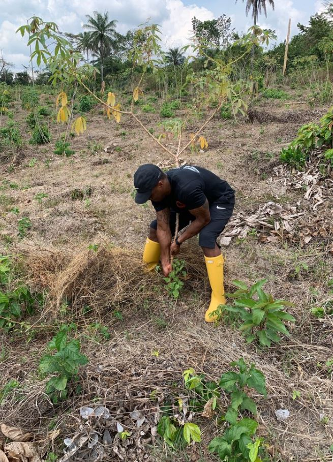

My first visit to Kawadah's cassava farm.I was blown away by the work they had accomplished!
During this jouney, my main goal was to put myself in the same shoes as the farmers. During this momemt, I realized that farming was a very hard job.

The cane juice connaisseurs.The brains behind our rum and sugar manufacturing.
These men daily tasks includes, cultivating the land, planting cane roots, harvesting cane and processing it into rum and sugar.

Co-founder Tony assisting Yei, our farm manager.Tony couldn't belive his eys when he saw the harvested cassava.
During this moment, he realized that it takes an entire village to believe in a vision in order for that vision to come to fruition.